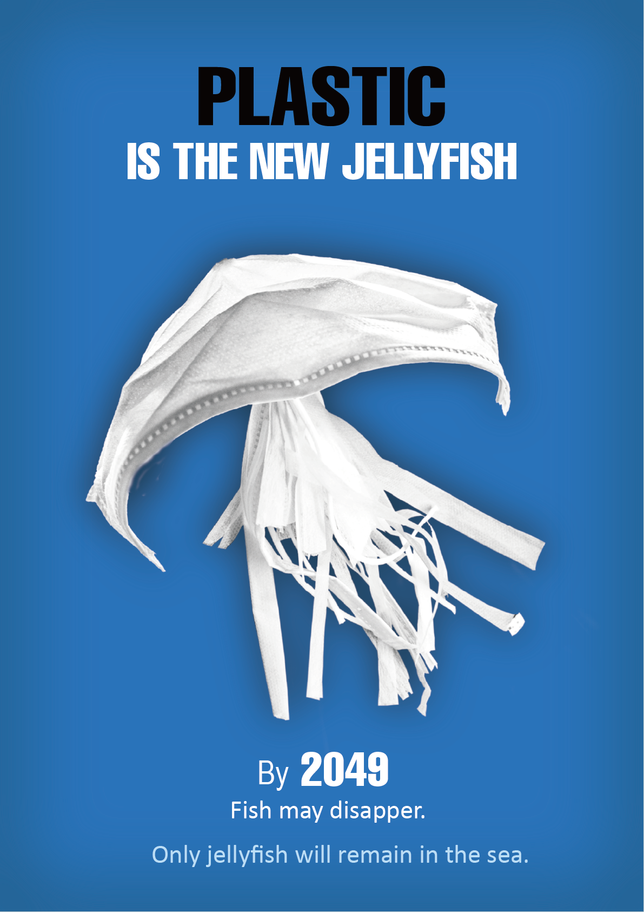
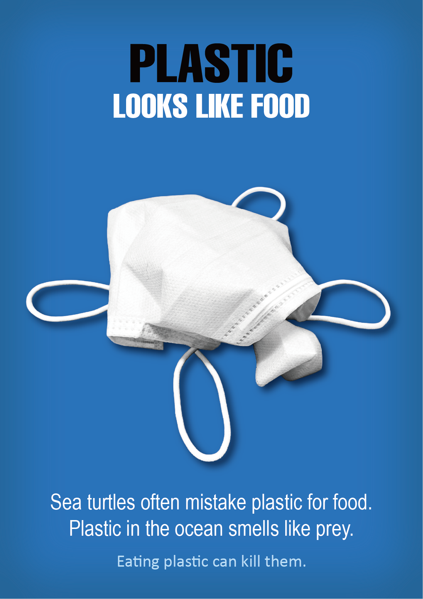
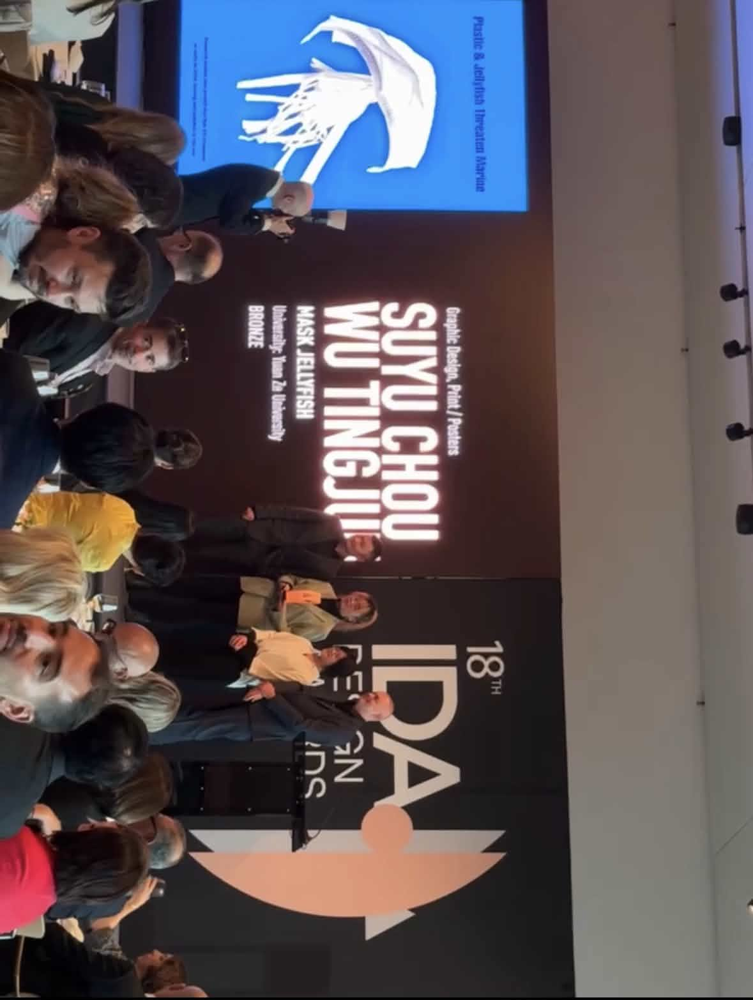
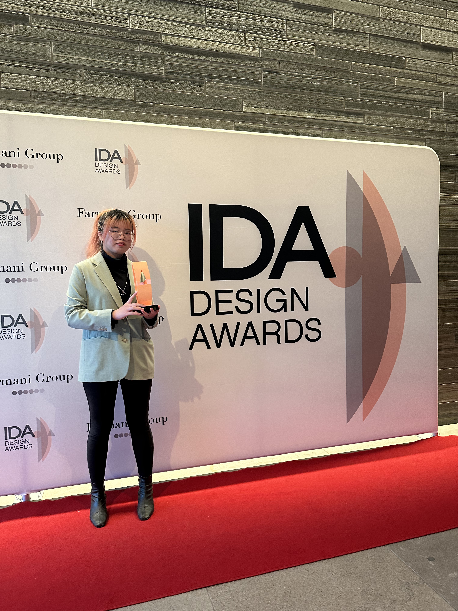
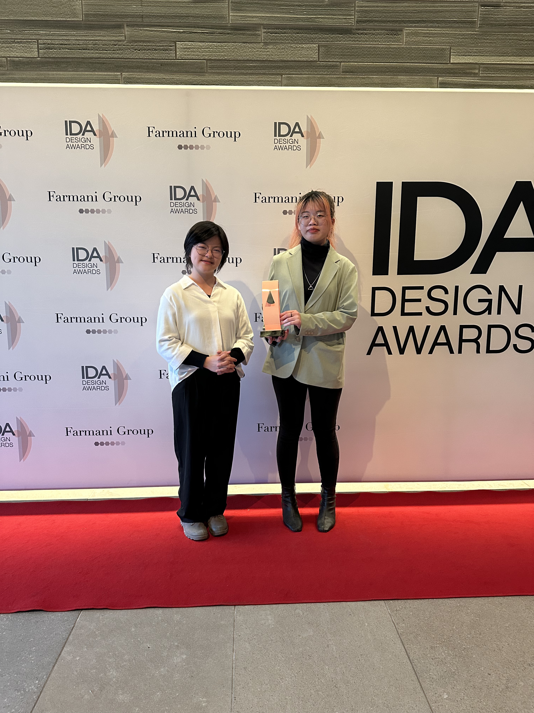

Ocean of Masks
以拋棄式口罩轉化為海洋生物，探討塑膠污染對生態的影響。

Project Info
類型｜海報設計
創作形式｜協作創作
合作對象｜吳庭君
負責｜主要視覺設計與整體視覺發展
獲獎｜IDA 2024 Bronze Award
Concept
《Ocean of Masks》為一系列關注海洋塑膠污染的海報作品。 創作靈感來自 COVID-19 疫情期間大量使用的一次性口罩， 這些口罩最終流入海洋，成為新的污染來源。
系列將廢棄口罩轉化為水母與海龜的形象， 透過視覺隱喻呈現塑膠對生態的影響： 取代原有生命、被誤食，以及纏繞並傷害動物。
藉由將日常廢棄物轉化為象徵性生物， 作品試圖揭示人類消費行為對海洋環境的改變， 並引發觀者對環境議題的關注與反思。
本系列後續亦持續發展新的延伸作品， 以相同概念探索不同生物與視覺轉化方式， 擴展整體敘事與視覺語言。

Series Extension
此系列後續持續發展，延伸探索不同海洋生物與口罩形態的轉化， 透過相同概念建立更完整的視覺敘事。

得獎紀錄
本作品曾獲IDA 2024 銅獎


